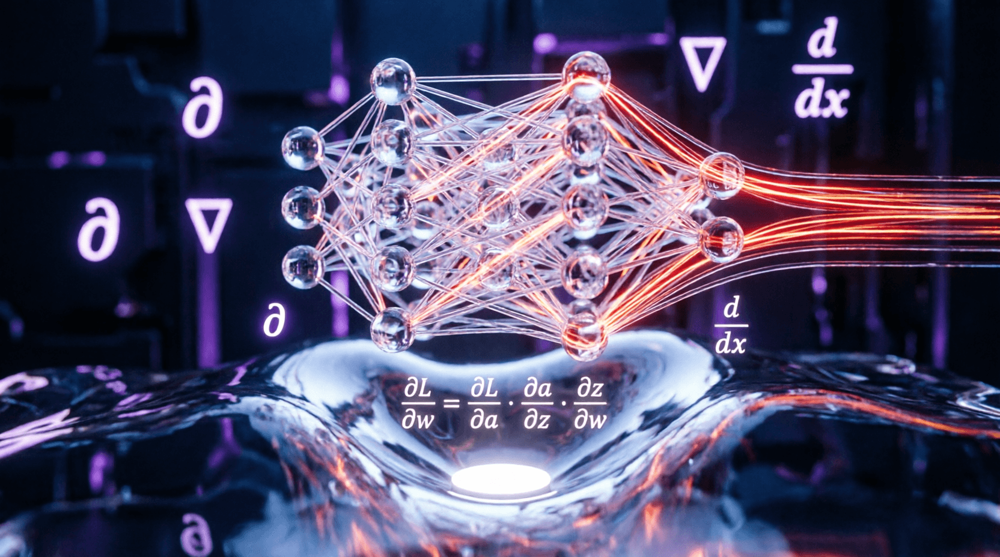

Урок 9: Архитектура Рекуррентных сетей (RNN/LSTM/GRU)
ML-инженер • Архитектура нейросетей с нуля
Сверточные и полносвязные сети обрабатывают каждый пример независимо. Однако тексты, аудиосигналы и временные ряды обладают внутренней последовательной зависимостью. Рекуррентные нейронные сети (RNN) сохраняют внутреннюю «память» (скрытое состояние), которая обновляется с каждым новым шагом последовательности. На этом уроке мы разберем проблему затухания градиентов в RNN и реализуем продвинутую ячейку LSTM на чистых тензорах.
Архитектура LSTM решает проблему затухания градиентов за счет введения состояния ячейки (Cell State, $C_t$) — своеобразной конвейерной ленты, по которой информация течет сквозь время с минимальными линейными изменениями. Потоком информации управляют три фильтра (клапана/гейта) на основе сигмоидальной активации:
Проектирование кастомной ячейки позволяет понять, как объединяются текущий вход $X_t$ и прошлое скрытое состояние $H_{t-1}$ для параллельного расчета всех внутренних гейтов.
import torch
import torch.nn as nn
class CustomLSTMCell(nn.Module):
def __init__(self, input_size, hidden_size):
super().__init__()
self.input_size = input_size
self.hidden_size = hidden_size
# Вместо создания 4 отдельных линейных слоев для каждого гейта,
# эффективнее объединить их в один большой слой размера (4 * hidden_size)
self.gates = nn.Linear(input_size + hidden_size, 4 * hidden_size)
def forward(self, x_t, states):
# states — это кортеж из (h_{t-1}, c_{t-1})
h_prev, c_prev = states
# Конкатенируем входной вектор и прошлое скрытое состояние по оси фичей
combined = torch.cat((x_t, h_prev), dim=-1) # Форма: [Batch_Size, Input_Size + Hidden_Size]
# Прогоняем через линейный слой
all_gates = self.gates(combined) # Форма: [Batch_Size, 4 * Hidden_Size]
# Разрезаем получившийся тензор на 4 равные части для каждого гейта
i_t, f_t, g_t, o_t = torch.chunk(all_gates, chunks=4, dim=-1)
# Применяем соответствующие функции активации
i_t = torch.sigmoid(i_t) # Input gate
f_t = torch.sigmoid(f_t) # Forget gate
o_t = torch.sigmoid(o_t) # Output gate
g_t = torch.tanh(g_t) # Кандидат в новое состояние ячейки (\tilde{C}_t)
# Математическое обновление состояния ячейки (Cell State)
c_next = f_t * c_prev + i_t * g_t
# Вычисление нового скрытого состояния (Hidden State)
h_next = o_t * torch.tanh(c_next)
return h_next, c_nextGRU — это облегченная и более быстрая модификация LSTM. Она объединяет состояние ячейки и скрытое состояние в один тензор $h_t$, а также использует всего два гейта: Update Gate (совмещает функции очистки и записи памяти) и Reset Gate (определяет, насколько сильно прошлое влияет на текущий кандидат состояния). GRU содержит на 33% меньше параметров, благодаря чему работает быстрее на коротких датасетах.
Используя написанный класс CustomLSTMCell, спроектируйте полноценный слой CustomLSTMModel, способный обрабатывать трехмерные тензоры последовательностей формы [Batch_Size, Sequence_Length, Input_Size]. Внутри метода forward организуйте цикл for по временной оси (Sequence_Length), последовательно передавая шаг x[:, t, :] и обновляемые скрытые состояния в вашу ячейку. Функция должна возвращать финальное скрытое состояние последнего шага.
import torch
import torch.nn as nn
class CustomLSTMModel(nn.Module):
def __init__(self, input_size, hidden_size):
super().__init__()
self.cell = CustomLSTMCell(input_size, hidden_size)
self.hidden_size = hidden_size
def forward(self, x):
# x имеет форму [Batch_Size, Sequence_Length, Input_Size]
batch_size, seq_len, _ = x.shape
# Инициализация начальных состояний нулями
h_t = torch.zeros(batch_size, self.hidden_size, device=x.device)
c_t = torch.zeros(batch_size, self.hidden_size, device=x.device)
# Цикл по последовательности (по шагам времени)
for t in range(seq_len):
# Берем срез тензора на шаге t: [Batch, Input]
x_t = x[:, t, :]
# Передаем в ячейку и обновляем состояния
# ВАШ КОД ЗДЕСЬ: h_t, c_t = self.cell(...)
pass
return h_t, c_t
if __name__ == "__main__":
model = CustomLSTMModel(input_size=32, hidden_size=64)
x = torch.randn(4, 10, 32) # 4 примера, 10 шагов, размер 32
h_out, c_out = model(x)
print("H_out shape:", h_out.shape) # [4, 64]import torch
import torch.nn as nn
# Класс CustomLSTMCell берем из урока...
class CustomLSTMModel(nn.Module):
def __init__(self, input_size, hidden_size):
super().__init__()
self.cell = CustomLSTMCell(input_size, hidden_size)
self.hidden_size = hidden_size
def forward(self, x):
batch_size, seq_len, _ = x.shape
h_t = torch.zeros(batch_size, self.hidden_size, device=x.device)
c_t = torch.zeros(batch_size, self.hidden_size, device=x.device)
for t in range(seq_len):
x_t = x[:, t, :]
h_t, c_t = self.cell(x_t, (h_t, c_t))
return h_t, c_t
if __name__ == "__main__":
model = CustomLSTMModel(input_size=32, hidden_size=64)
x = torch.randn(4, 10, 32)
h_out, c_out = model(x)
print("H_out shape:", h_out.shape) # [4, 64]
print("C_out shape:", c_out.shape) # [4, 64]В отличие от сверточных или полносвязных сетей, где операции над всем батчем и всеми признаками можно выполнить за одну матричную операцию, в RNN состояние на шаге $t$ зависит от состояния на шаге $t-1$. Эта зависимость во времени заставляет нас выполнять вычисления итеративно.
device=x.device, чтобы тензоры оказались на том же устройстве (CPU/GPU), что и входные данные.nn.LSTM написан на C++/CUDA и работает намного быстрее именно потому, что там цикл оптимизирован на уровне ядра.Приложение бесплатное. Было и останется.
Если проект помог вам или вашим близким — можете поддержать разработку добровольным переводом.
❤️ Спасибо за поддержку!
Перейти в каталог
